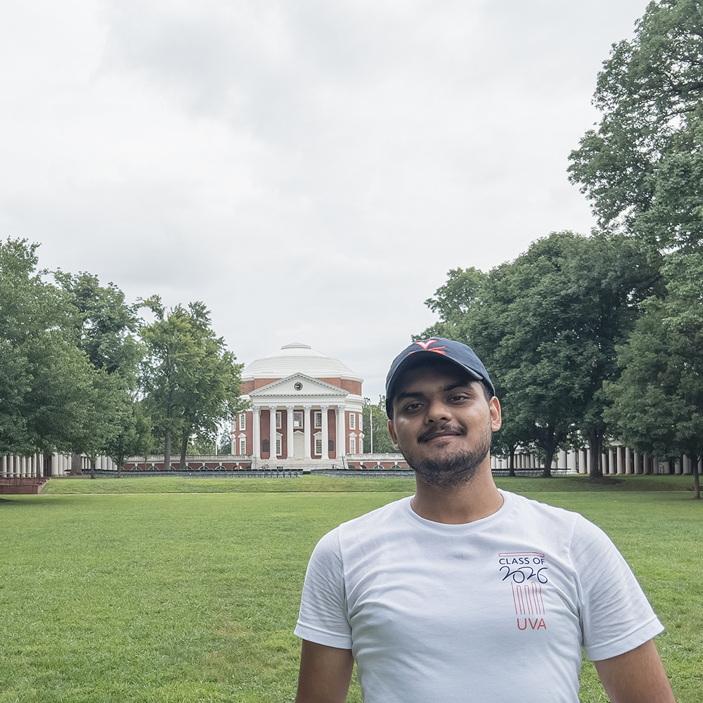

Saket Upadhyay

PhD student, University of Virginia
<firstname> {at} virginia {dot} edu
Computer Science Ph.D. student at University of Virgina. Currently, I am working on hardware-level type and memory safety for modern architectures under Dr. Ashish Venkat.
My research interests are -
- Low-Level software security.
- Micro-architectural security.
- Sub Ring-0 security and privilege escalation.
- x86 CISC processor security.
- Malware detection and analysis.
I am also interested in Malware Detection, Analysis and Reverse Engineering. During my undergraduate I researched on Android malware detection and Nature Inspired Cyber Security (NICS) under Dr. Shishir K. Shandilya, and worked on Threat Detection and Analysis as security research intern in Uptycs.